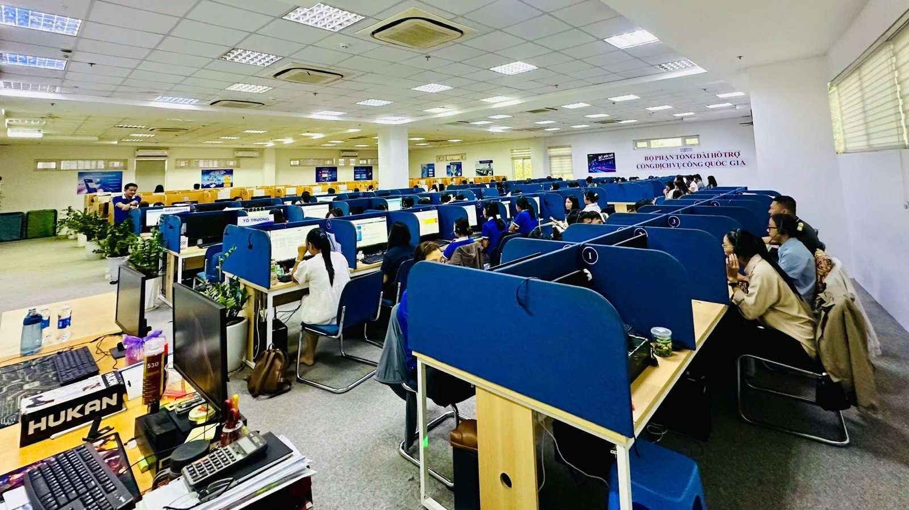
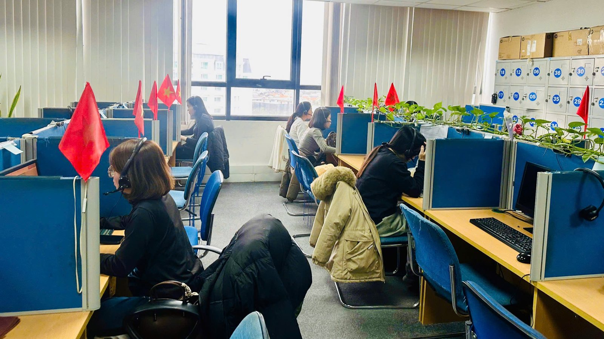
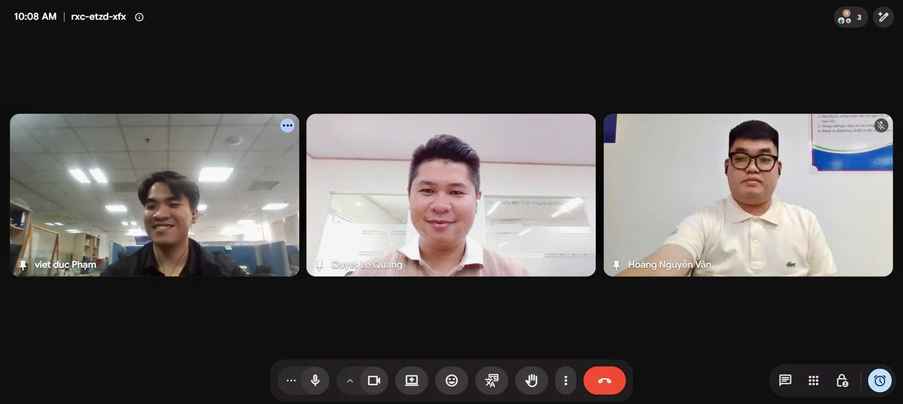
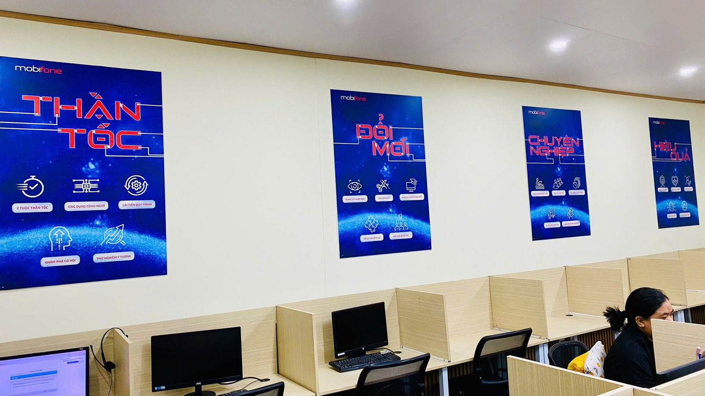

Dự án
Go-live tổng đài Cisco kết hợp OmiCX cho KH MobiFone trên phạm vi toàn quốc

Chính thức go-live bộ giải pháp tổng đài Cisco kết hợp OmiCX của MPT cho MobiFone trên phạm vi toàn quốc!
Từ Hà Nội, Hải Phòng, Đà Nẵng, TP. Hồ Chí Minh đến Cần Thơ, anh em mỗi người một điểm cầu, nhưng tất cả cùng hướng về một mục tiêu chung: đưa hệ thống vào vận hành thành công.
Vì sao là tổng đài Cisco kết hợp OmiCX
Với một đơn vị có mạng lưới tổng đài trải dài nhiều tỉnh thành như MobiFone, bài toán không chỉ là tiếp nhận cuộc gọi, mà là để mọi điểm cầu cùng vận hành trên một hệ thống thống nhất.
- Tổng đài Cisco là nền tảng của Cisco, lo phần tiếp nhận và điều phối cuộc gọi cho các điểm cầu.
- OmiCX là nền tảng contact center đa kênh ứng dụng AI do MPT phát triển. OmiCX gom thoại, Zalo, Facebook, email về một nền tảng để agent xử lý nhanh hơn và supervisor nhìn thấy toàn cảnh.
- Kết hợp lại, MobiFone có một hệ thống cho nhiều điểm cầu, nhiều đội ngũ, đủ mạnh về hạ tầng và linh hoạt về trải nghiệm cho cả agent lẫn người giám sát.
Từng nhiều năm ngồi ở phía triển khai, tôi hiểu một hệ thống tốt không nằm ở tính năng trên giấy. Với đội vận hành, điều quan trọng nhất của một cuộc go-live không phải là hệ thống mới, mà là hôm sau agent vẫn làm việc quen tay, supervisor vẫn nhìn thấy mọi thứ, khách vẫn gọi vào như bình thường, và các điểm cầu ở xa nhau vẫn chạy cùng một nhịp.
Nhiều điểm cầu, một mục tiêu
Một dự án với nhiều địa điểm triển khai, nhiều đội ngũ phối hợp và không ít thử thách. Mỗi điểm cầu có một không gian làm việc riêng, nhưng cùng một nhịp theo dõi và xử lý để hệ thống chạy ổn định ngay từ những giờ đầu.


Họp trực tuyến giữa các điểm cầu
Vì mỗi người một nơi, chúng tôi giữ liên lạc bằng các buổi họp trực tuyến để cập nhật tình hình và phối hợp xử lý kịp thời.

Tinh thần "Thần tốc – Đổi mới – Chuyên nghiệp – Hiệu quả"
Đây cũng là dịp để MPT đồng hành cùng tinh thần của MobiFone: "Thần tốc – Đổi mới – Chuyên nghiệp – Hiệu quả", được thể hiện qua từng hành động.

Lời cảm ơn
Cảm ơn MobiFone và toàn thể anh chị em hai bên đã đồng hành, phối hợp để cùng tạo nên cột mốc này.